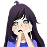

tharntype novela
Leer novela

Tentación BL
¿Podrás huir de la tentación? en este sitio lleno de perdición
Third ha apoyando y amando a Khai en secreto a pesar de saber que no existe ningún futuro entre ambos, puesto que Khai es heterosexual y mujeriego, además de tener la política de no salir con amigos.
Ritsu y Masamune habían sido pareja en la secundaria, después de que Ritsu se confesara abruptamente, y desde entonces habían mantenido una relación, debido a un malentendido se separaran.
El amor de Korn e Intouch estaba destinado a sufrir. En medio del caos, mientras Intoch seguía luchando por su futuro, Korn no pudo lidiar con todo el sufrimiento que enfrentaba su amado y decidió renunciar a su vida.
Naruto Uzumaki, un Omega que entra en dicho proyecto. Su protector Alfa no se trata de otro que de Uchiha Sasuke, una persona antisocial, amargada y taciturna que es admirado por todo el instituto.
HIStory es una colección de mini-dramas centrados en historias BL (boy love); es decir, amor entre dos chicos. La primera temporada cuenta con tres mini-dramas: My Hero, Stay Away From Me y Obsessed.
Wei Wuxian, era el fundador de una cultivación centrada en el control de cadáveres y artes ~oscuras~. Como consecuencia,todos los clanes de su época se volvieron contra él y Wei Wuxian falleció dramáticamente en un asedio.
Bon, el popular estudiante de ingeniería, comienza un plan de venganza contra Duen, el inocente estudiante de medicina, sus sentimientos comienzan a crecer cuando Duen tiene que darle rosas todos los días durante un mes.
Takato Saijō es un popular actor que durante cinco años consecutivos ha conseguido mantener el título de "hombre más deseado", título que recientemente le ha sido arrebatado por Junta Azumaya, un actor novato.